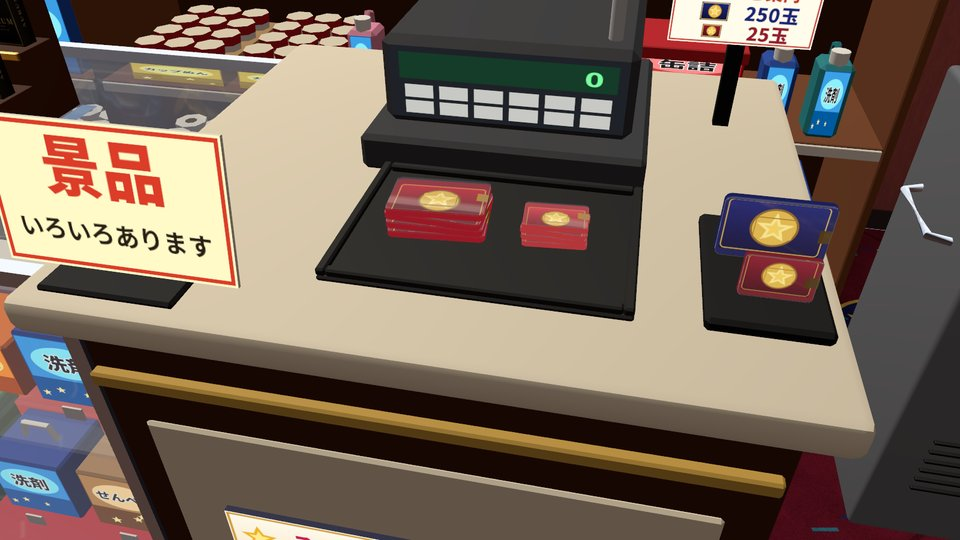
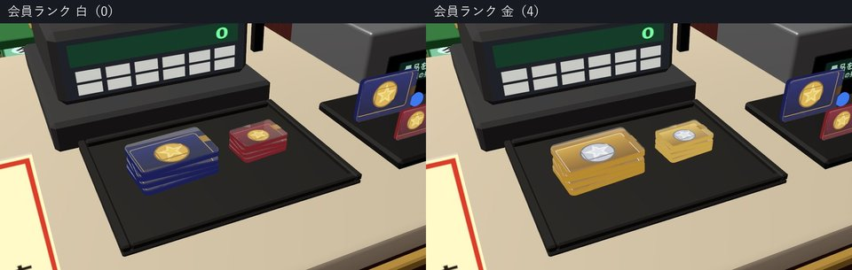
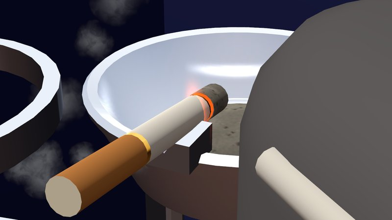
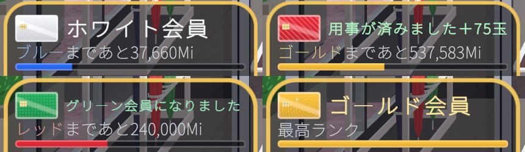
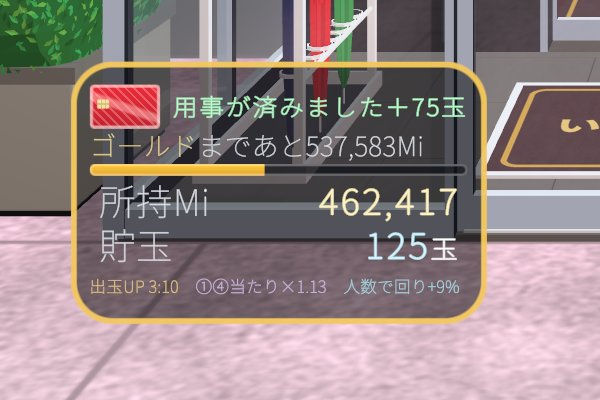

최종 갱신: 2026-11-23 (월)
가게 이용법
가게 시스템 정리. 기계 스펙은 각 기종의 페이지로.
목차
가게 안 지도

| 장소 | 있는 것 |
|---|---|
| 한가운데 | 기계 섬. 앞줄에 RABBIT HOLE 6대, 뒷줄에 STAR PARADE 6대 |
| 들어가서 왼쪽 | 경품 카운터, 담배와 주스 진열대, 계수기 (카운터 안쪽 끝), 커피 왜건 (서쪽 벽가) |
| 들어가서 오른쪽 | 내 성적 화면, 랭킹 (동쪽 벽), 안쪽에 휴게 코너 (상황판과 TV, 쓰레기통) |
| 통로 위 | 전광 게시판 |
| 가게 밖 | 수수께끼의 골동품상 (Hoshino Shokai) (스폰 지점 왼쪽, 주차장 끝의 오두막) |
※ 스폰 지점은 가게 앞 주차장.
기계 잡는 법
- 빈 기계의 打つ(치기, 핸들의 빨간 버튼), 玉を借りる(구슬 빌리기), 貯玉から出す(저축 구슬 꺼내기) 중 하나를 누르면 기계를 잡을 수 있다. 의자에는 앉지 않는다
- 구슬이 있으면 자동으로 친다. 세기도 자동 (가장 잘 도는 세기)
- PUSH는 도트 표시 앞에 나오는 버튼을 누른다
- 달러상자의 구슬은 치다 보면 자동으로 윗접시로 돌아온다
- 기계에서 2.2m 떨어지면 치기가 멈춘다. 떨어져도 5분간 유지된다 (구슬이 남아 있는 동안은 계속)
구슬과 저축 구슬
| 구슬 빌리기 | 500Mi로 125개 (구슬 1개 4Mi) |
|---|---|
| 저축 구슬 꺼내기 | 125개씩 |
| 윗접시 | 250개까지. 넘치면 아랫접시로 |
| 아랫접시 | 500개까지. 가득 차면 「玉を抜いてください」(구슬을 빼 주세요)가 나온다. 10초 동안 빼지 않으면 자동으로 구슬이 빠진다 (아랫접시 → 달러상자) |
| 달러상자 | 1,000개까지. 가득 차면 쌓인다 (10단 더미 6개, 60상자까지) |
※ 구슬 빼기를 기다리는 동안 아랫접시에 들어가지 않는 구슬은 바닥에 흘러내린다 (100개까지). 바닥의 구슬은 「こぼれた玉を拾う」(흘린 구슬 줍기)로 주운 사람의 저축 구슬에 들어간다. 누구나 주울 수 있다.
※ 계수하지 않고 떠나도, 다음에 오면 기계의 구슬은 저축 구슬에 들어간다.
계수와 경품
- 계수기의 計数(계수)로 기계의 구슬을 세어 저축 구슬에 넣는다. 달러상자가 계수기 위에서 기울어 구슬이 흘러 들어간다
- 景品に換える(경품으로 바꾸기)로 저축 구슬을 경품으로 바꾼다. 큰 경품(남색 케이스)과 작은 경품(빨간 케이스)의 수를 「－」「＋」로 고른다. 全部(전부)는 바꿀 수 있는 만큼 전부
- 바꾸지 않은 구슬은 저축 구슬로 남는다. 담배와 주스에도 쓸 수 있다
경품 1개에 드는 구슬 수는 회원 랭크에 따라 달라진다.
| 회원 랭크 | 큰 경품 | 작은 경품 | 구슬 1개당 |
|---|---|---|---|
| 화이트 | 333개 | 33개 | 3Mi |
| 블루 | 313개 | 31개 | 3.2Mi |
| 그린 | 294개 | 29개 | 3.4Mi |
| 레드 | 270개 | 27개 | 3.7Mi |
| 골드 | 250개 | 25개 | 4Mi |
※ 골드가 되어야 등가 (구슬 1개 4Mi. 구슬을 빌리는 값과 같다).


※ 케이스 색은 회원 랭크에 따라 바뀐다. 화이트 회원은 남색과 빨강.


수수께끼의 골동품상 (Hoshino Shokai)

가게 밖, 스폰 지점 왼쪽의 오두막. 어째서인지 가게의 경품을 사 준다. 창구의 景品を出す(경품 내기)를 누르면 가진 경품이 Mi로 바뀐다. 가게와는 관계없다고 한다.
큰 경품은 1,000Mi, 작은 경품은 100Mi. 랭크와 상관없이 같다.
돈벌이
소지 Mi는 처음에 5,000Mi. 소지 Mi, 저축 구슬, 경품은 다음에 왔을 때도 남는다.
| 방법 | 받는 것 | 메모 |
|---|---|---|
| 커피 판매원 | 3잔에 저축 구슬 250개 | 다음 일까지 20초 |
| 쓰레기 줍기 | 빈 캔도 꽁초도 1개에 10개 (저축 구슬) | 배출 업 1분 30초 포함 |
| 오늘의 할 일 | 저축 구슬 50~125개 (주간 할 일은 375~625개) | 매일 3개, 매주 1개 |
커피 판매원

- 커피 왜건의 입간판에서 売り子を始める(판매원 시작)을 누른다. 쟁반이 손에 놓인다 (VR은 왼손, 데스크톱은 화면 아래)
- 기계 위에 주문 카드가 선다. 빨간 카드는 핫, 파란 카드는 아이스
- 왜건의 포트에서 핫, 피처에서 아이스를 쟁반에 담는다 (3잔까지)
- 카드를 눌러 건넨다. 3잔을 건네면 저축 구슬 250개
- 다음 일까지 20초 휴식


쓰레기 줍기와 선물
- 빈 캔과 꽁초는 휴게 코너 쓰레기통 구멍 위에서 놓으면 버려진다. 누구의 것이든, 빈 캔도 꽁초도 1개에 10개가 저축 구슬에 들어오고 배출 업이 1분 30초 붙는다
- 바닥의 쓰레기는 25~50초마다 기계 주변에 나온다 (6개까지)
- 다른 사람이 치고 있는 기계의 컵홀더나 재떨이에 주스나 담배를 내놓으면 선물(差し入れ)이 된다. 준 사람과 받은 사람 모두에게 배출 업이 1분 30초 붙는다


오늘의 할 일

매일 3개, 매주 1개를 다음 중에서 뽑는다.
- 기계를 100회 돌린다
- 대박을 1번 뽑는다
- 계수기로 구슬을 센다
- 구슬을 경품으로 바꾼다
- 수수께끼의 골동품상에게 경품을 가져간다
- 커피를 1잔 나른다
- 빈 캔을 3개 버린다
- 담배를 1개비 피운다
담배와 주스
저축 구슬로 바꿔서 기계에서 쓰면 배출 업이 붙는다. 스틱 치즈 「Hoshizora Cheese」(ほしぞらチーズ)도 담배와 같은 취급.
| 담배 | Hoshizora Cheese | 주스 | |
|---|---|---|---|
| 가격 | 저축 구슬 70개로 1갑 20개비 | 저축 구슬 70개로 1봉지 20개 | 저축 구슬 300개로 1케이스 12캔 |
| 꺼내는 곳 | 기계의 재떨이를 누르면 1개 | 재떨이 앞의 컵홀더를 누르면 1캔 | |
| 쓰기 | 들고 사용하면 불이 붙는다 | 들고 사용하면 포장을 깐다 | 들고 사용하면 딴다 |
| 입으로 가져가기 | 빤다. 10모금쯤에 필터 근처까지 탄다 | 베어 문다. 15입쯤에 다 먹는다 | 마신다. 8모금이면 빈 캔 |
| 배출 업 | 불이 붙어 있는 동안 | 먹고 있는 동안 | 따서 내용물이 있는 동안 |
| 들고만 있으면 | 빨지 않아도 4분이면 다 탄다 | 먹지 않아도 4분이면 치워진다 | 따 두면 4분 뒤 빈 캔이 된다 |
바꾸는 법과 상표
- 담배는 경품 카운터 쇼케이스 위의 선반. 상표의 줄을 누르면 그 상표 1갑. 빨간 「タバコに換える」(담배로 바꾸기)는 마지막에 바꾼 상표
- Hoshizora Cheese는 담배 선반과 주스 칸 사이의 상자. 화이트 회원부터 바꿀 수 있다
- 주스는 같은 카운터의 주스 칸. 견본 캔을 누르면 그 종류 1케이스. 칸 앞에 케이스가 4초간 나온다
- 저축 구슬이 모자라면 「貯玉が足りません」(저축 구슬이 부족합니다). 가진 개수는 상표마다 다음에 왔을 때도 남는다
바꿀 수 있는 상표는 회원 랭크에 따라 늘어난다. 아직 못 바꾸는 물건도 선반에 놓여 있고 「ブルー会員から」(블루 회원부터) 같은 표가 붙어 있다. 누르면 「AURUM은 골드 회원부터」처럼 나온다. 이미 가진 주스는 랭크와 관계없이 꺼낼 수 있다.
| 회원 랭크 | 담배 | 주스 |
|---|---|---|
| 화이트 | MOONRISE, CORAL | 오렌지, 녹차 |
| 블루 | MINT LEAF | 콜라 |
| 그린 | COMET | 사이다 |
| 레드 | SCARLET | 커피 |
| 골드 | AURUM | 밀크티 |

꺼내는 법
- 재떨이를 누르면 손에 든 재고에서 1개비가 나와 재떨이 홈에 놓인다. 재떨이에 놓을 수 있는 건 1개비까지
- 컵홀더를 누르면 재고에서 1캔이 나와 선다. 홀더에 캔이 서 있는 동안은 나오지 않는다
- 나오는 것은 마지막에 바꾼 상표부터. 주스는 그 종류가 떨어지면 남아 있는 다른 종류가 나온다
- 재떨이 위에 남은 개수가 3.5초간 나온다. 재고가 0이면 「タバコはカウンターで」(담배는 카운터에서), 「ジュースはカウンターで」(주스는 카운터에서)
- 가게 안에 동시에 꺼내 둘 수 있는 건 담배 16개비, 캔 16개까지
쓰는 법
| VR | 데스크톱 | |
|---|---|---|
| 담배 피우기 | 필터를 입에서 5.5cm 이내에 갖다 댄다 | 들고 사용하면 입으로 가져간다 |
| 재 | 불 끝 바깥으로 재가 자라, 1.6cm에서 떨어진다. VR은 사용하면 털 수 있다 | |
| 주스 마시기 | 뚜껑을 입에서 8cm 이내에 갖다 대고 기울인다. 가득 찼을 때 25°, 비어 갈수록 깊게 70°까지 | 들고 사용하면 입의 오른쪽 끝으로 아래에서 가져간다 (1모금 1초) |
| 치즈 먹기 | 담배와 같은 잡는 법과 가져가는 법. 입으로 가져가면 베어 물어 짧아진다 | |


놓아 둔 뒤 사라질 때까지
| 상태 | 사라질 때까지 |
|---|---|
| 불 붙은 담배를 재떨이에 놓는다 | 90초에 불이 꺼지고, 꽁초는 25초 뒤에 사라진다 |
| 불을 붙이지 않고 재떨이에 놓는다 | 2분 |
| 담배를 바닥 등에 떨어뜨린다 | 90초에 불이 꺼지고, 떨어뜨린 지 5분 뒤에 사라진다 |
| 치즈를 놓아 둔 채로 | 90초 |
| 딴 캔 | 마시지 않아도 4분이면 빈 캔이 된다 |
| 빈 캔을 홀더에 놓는다 | 20초 (홀더를 누르면 치워지고 다음 1캔) |
| 빈 캔을 바닥 등에 놓는다 | 5분 |
| 따지 않은 캔을 놓는다 | 홀더에서 10분, 다른 곳에서 3분. 낸 사람의 손으로 돌아간다 |
효과
들고 있을 때도, 재떨이나 홀더에 놓아 둘 때도 어태커 1카운트의 상구가 +1이 된다(배출 업). 윗단계 상표일수록 다 피운 뒤, 다 마신 뒤에도 배출 업이 남는다.
| 상표 랭크 | 끝난 뒤 남는 시간 |
|---|---|
| 화이트 (Hoshizora Cheese도) | 0초 |
| 블루 | 23초 |
| 그린 | 45초 |
| 레드 | 68초 |
| 골드 | 90초 |
오컬트와도 관계가 있다 (오컬트).
- ① 담배에 불을 붙이고 90초는 ×1.08. 치즈의 포장을 깔 때도 ①이 된다
- ⑤ 이 기계의 컵홀더에 캔이 서 있는 동안은 ×1.08. 내 캔이든, 놓아 준 캔이든 상관없다
선물
- 다른 사람이 치고 있는 기계의 컵홀더나 재떨이에 주스나 담배를 내놓으면 선물(差し入れ)이 된다. 치즈도 같다
- 준 사람과 받은 사람 모두에게 배출 업이 1분 30초 (이어서 하면 7분 30초까지)
- 준 사람의 재떨이 위에 「差し入れ」(선물), 받은 사람의 재떨이 위에 「〇〇さんから ジュースの差し入れ」(○○님이 준 주스 선물)가 나온다
- 효과는 준 사람은 20초에 한 번, 받은 사람은 10초에 한 번까지
쓰레기 버리는 법
- 빈 캔과 꽁초는 휴게 코너 쓰레기통 구멍 위에서 놓는다. 구멍 한가운데에서 좌우 26cm, 구멍 35cm 아래부터 1m 위까지면 들어간다. 뚜껑 위에 놓인 것도 버린 것으로 친다
- 누구의 것이든, 내 것이든 1개에 10개가 저축 구슬에 들어오고 배출 업이 1분 30초 (이어서 하면 7분 30초까지)
- 연속으로 받으려면 6초를 비운다. 내용물이 있는 캔, 따지 않은 캔, 불 붙은 담배는 구슬이 없다
- 바닥의 쓰레기는 25~50초마다 기계 주변에 나온다 (6개까지. 쓰레기 줍기)
잡학
- 치즈 상자 앞의 표 「ほかの人のタバコをチーズに見せる」(남의 담배를 치즈로 보이게 하기)를 누르면 켜고 끌 수 있다. 켜 둔 동안은 남의 담배와 꽁초가 치즈 모양이 되고, 불, 연기, 재가 보이지 않는다. 내 화면에서만
- 치즈에는 불, 연기, 재, 라이터 소리가 없다. 깔 때는 「파삭」, 베어 물 때는 「오독」
- 담배는 빨면 불이 밝아지고, 떼면 잠시 뒤 연기를 뱉는다. 한 모금에 4~5mm 짧아진다
- 캔은 주둥이로 내용물의 표면이 보이고, 마시면 내려간다. 내용물의 색은 종류의 색
- 들고 있는 물건은 다른 사람이 가져갈 수 없다. 놓아 둔 물건은 가져갈 수 있다

배출 업과 오컬트
배출 업
어태커 1카운트의 상구가 +1.
※ 이 페이지의 시간은 화이트 회원 기준. 회원 랭크에 따라 늘어난다 (블루 ×1.1, 그린 ×1.2, 레드 ×1.35, 골드 ×1.5). 오컬트 ①③④의 시간도 같다.
| 걸리는 때 | 지속 시간 |
|---|---|
| 딴 주스를 들고 있거나 놓아 둔다 | 그동안 |
| 불 붙은 담배를 들고 있거나 놓아 둔다 | 그동안 |
| 쓰레기를 1개 버린다 | 1분 30초 (이어서 하면 7분 30초까지) |
| 선물을 하거나 받는다 | 1분 30초 (이어서 하면 7분 30초까지) |
오컬트
통상 시 자기 기계에서만 당첨 확률이 조금 오른다. 합쳐서 최대 1.3배. 연출은 나오지 않는다.
| 번호 | 조건 | 당첨 쉬움 |
|---|---|---|
| ① | 담배에 불을 붙이고 90초 | ×1.08 |
| ② | 유지해 둔 기계에 20초 이상 지나 돌아온 뒤의 보류 5개 | ×1.10 |
| ③ | 같은 줄의 옆 기계가 대박에 들어가고 90초 | ×1.08 |
| ④ | 구슬을 빌리고 45초 | ×1.05 |
| ⑤ | 이 기계에 캔을 놓아 둔 상태 (내 캔이든, 놓아 준 캔이든) | ×1.08 |
인원수
인스턴스의 인원이 많을수록 구슬이 헤소에 들어가기 쉽다 (최대 +15%).
※ 걸려 있는 버프는 화면 왼쪽 아래, 소지 Mi 밑에 나온다 (예: 出玉UP 3:10 ①④当たり×1.13 人数で回り+9%. 배출 업 3:10, 오컬트 ①④가 ×1.13, 인원수로 회전 +9%라는 뜻).
회원 랭크
지금까지의 최고 소지 Mi로 올라간다. 내려가지 않는다.
| 랭크 | 최고 소지 Mi | 구슬 1개의 값 | 구슬 색 | 카드 무늬 |
|---|---|---|---|---|
| 화이트 | 0 | 3Mi | 은색 | 가는 사선 |
| 블루 | 50,000Mi | 3.2Mi | 청은색 | 물결 |
| 그린 | 150,000Mi | 3.4Mi | 녹은색 | 점 |
| 레드 | 400,000Mi | 3.7Mi | 적은색 | 굵은 띠 |
| 골드 | 1,000,000Mi | 4Mi | 금색 | 물결 무늬와 별 |
- 구슬 1개의 값은 계수기에서 경품으로 바꿀 때 드는 구슬 수로 정해진다 (계수와 경품). 골드에서 등가 (빌리는 값과 같은 4Mi)
- 경품 케이스의 바탕색과 담배, 주스 상표도 랭크에 따라 바뀐다 (상표 표)
- 배출 업과 오컬트의 시간도 늘어난다 (블루 ×1.1, 그린 ×1.2, 레드 ×1.35, 골드 ×1.5, 배출 업과 오컬트)
- 화면 표시에 「ブルーまであと12,300Mi」(블루까지 앞으로 12,300Mi)처럼 다음 랭크까지의 남은 양이 나온다


성적, 랭킹, 표시
| 내 성적 | 회전수, 대박, 최고 연짱, 일격, 투자, 회수, 수지. 오늘의 할 일과 8초마다 번갈아 나온다 |
|---|---|
| 랭킹 | 이번 달의 수지, 일격, 최고 연짱과, 소지 Mi, 지금까지의 일격, 최고 연짱의 6페이지. 이번 달 분은 달마다 끊는다 |
| 전광 게시판 | 누가 대박에 들어가면 「〇〇さんが7番台のRABBIT HOLEで大当り」(○○님이 7번 기계 RABBIT HOLE에서 대박)처럼 흐른다 |
| 상황판과 TV | 휴게 코너. 12대의 대박, 연짱, 스타트, 상태와, 치고 있는 기계를 차례로 비추는 카메라 |
※ 일격(一撃)은 1회의 연짱에서 어태커로 나온 구슬의 최고 수.


화면 표시

회원 카드와 랭크, 소지 Mi, 저축 구슬, 기계의 구슬이 나온다. 데스크톱과 스마트폰은 화면 왼쪽 아래, VR은 왼쪽 손목을 보면 나온다. 성적 화면 아래의 표로 표시를 켜고 끌 수 있다.
회원 카드와 랭크, 소지 Mi, 가진 구슬은 아바타 머리 옆에도 작게 나와서 다른 사람에게 보인다.